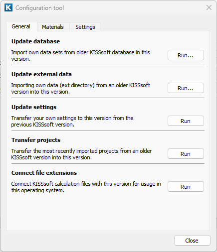
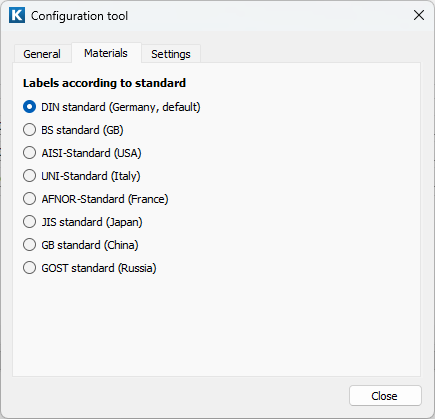
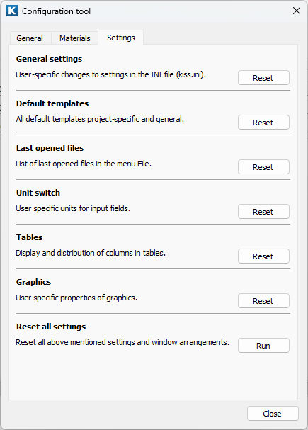

|
|
|


配置工具
在选项卡中，您可以通过选择选项来选择旧版本的"kdb"数据库目录（03-2017 之前。之后称为"udb"）。单击"Run"以将您在旧版本中自行定义的数据集传输到当前版本，确保这些数据集在当前版本中可用。
单击以选择旧版本的"ext"目录。这随后会自动将"dat"、"rpt"和"rpu"子目录复制到当前版本。
单击以将您的个人设置从上一个版本传输到当前版本。
选择以将所有 KISSsoft 文件与当前版本关联，这样您就可以通过双击任意文件，在当前版本中将其打开。

图 2.1：配置工具窗口中的常规选项卡
在选项卡中，您可以指定数据库中材料描述应遵循的标准。

图 2.2：配置工具窗口中的材料选项卡
在选项卡中，您可以删除用户定义的设置（分为若干组）。这将重新加载默认值。

图 2.3：配置工具窗口中的设置选项卡
Configuration tool
In the tab, you can select the older version's "kdb" database directory (prior to 03-2017. After that, it is called "udb".) by selecting the option. Click "Run" to transfer the datasets you defined yourself in the older version to the current version, to ensure these datasets are available in the current version.
Click to select the older version's "ext" directory. This then automatically copies the "dat", "rpt" and "rpu" subdirectories to the current Release.
Click to transfer your personal settings from the previous version to the current Release.
Select to link all the KISSsoft files with the current version so that you can double-click on any file to open it in the current Release.
Figure 2.1: General tab in the Configuration tool window
In the tab, you can specify the standard with which the material descriptions in the database are to comply.
Figure 2.2: Materials tab in the Configuration tool window
In the tab, you can delete the user-defined settings (divided into groups). This reloads the default values.
Figure 2.3: Settings tab in the Configuration tool window